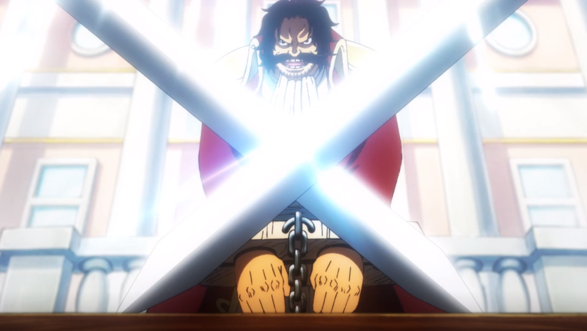
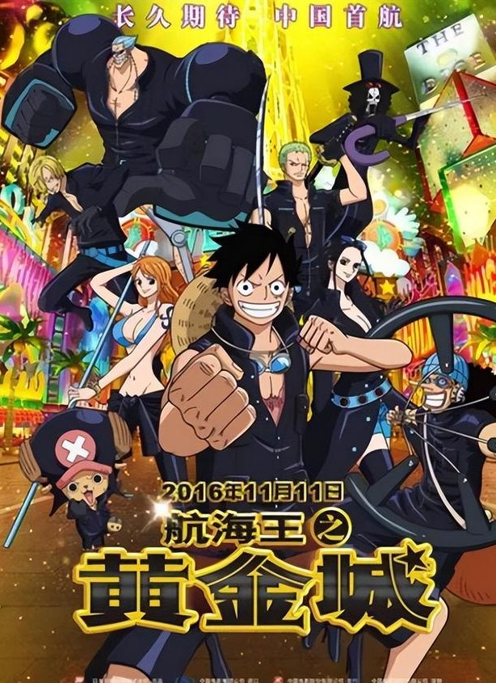
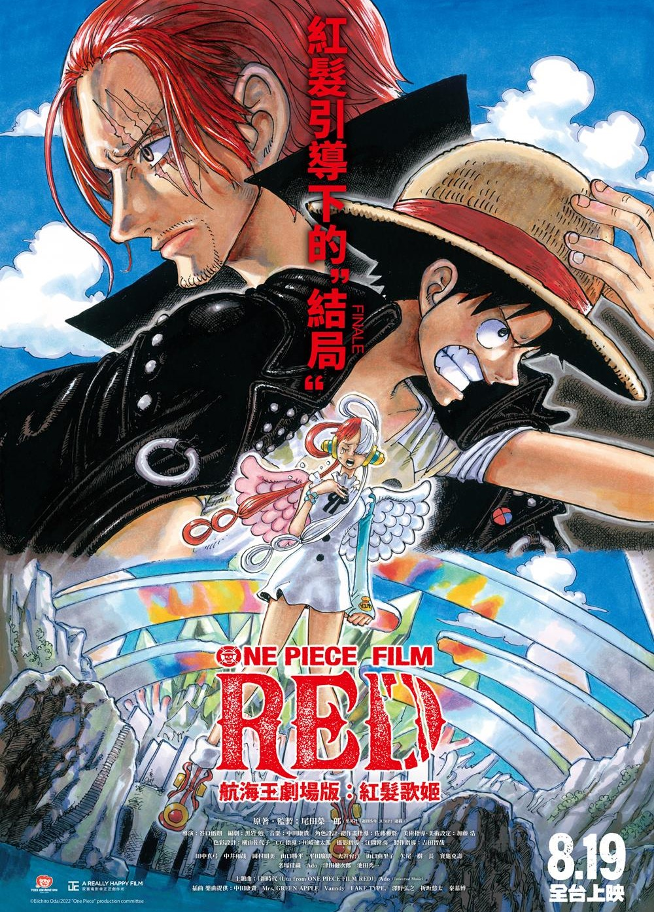
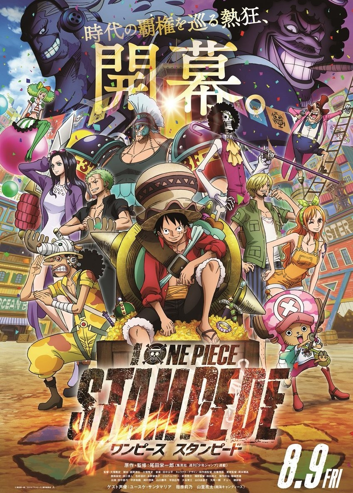
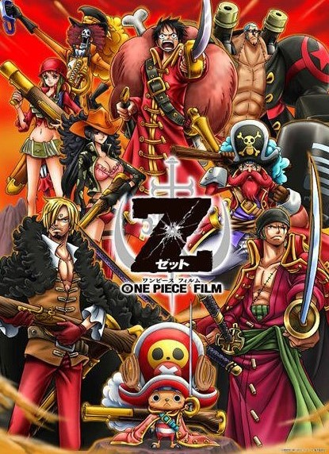

One Piece
《ONE PIECE》（日語：ONE PIECE／ワンピース），是日本漫畫家尾田榮一郎創作的少年漫畫，自1997年7月22日起在集英社旗下雜誌《週刊少年Jump》連載，同年12月發行第一冊單行本，至今已出版105冊單行本。並在漫畫雜誌《週刊少年Jump》中長期佔據人氣榜的第一名，單行本在日本以外，亦已有30多個國家翻譯版本發行。另外也衍生出諸多作品，包括同名的電視動畫、電影、小說和電子遊戲等周邊媒體產品。
作品以虛構的「大海賊時代」為故事舞台，描述海賊蒙其．Ｄ．魯夫想要得到「ONE PIECE」（一個大秘寶）和成為「海賊王」為夢想而出海向「偉大的航道」航行的海洋冒險故事。
故事簡介

擁有財富、名聲和權力的男人哥爾．Ｄ．羅傑在被行刑之前說了一句話：「想要尋找我的寶藏嗎？如果你有興趣的話，那就到海上去尋找吧，我把它全部都放在那裡。」讓全世界的人都湧向了大海。這句話彷彿點燃了無數人心中對冒險與未知的渴望，紛紛踏上航海的旅程。海洋成為了他們探索、戰鬥、交流和尋找財寶的舞台，無數島嶼被探索，海盜在波濤洶湧的海面上相互競爭，形成了一個全新的大海賊時代。這個時代充滿了刺激、冒險和不確定性，而哥爾．Ｄ．羅傑的寶藏成為了許多人努力追逐的目標。
為了尋找傳說中羅傑所留下的大秘寶「ONE PIECE」，無數海賊揚起旗幟互相爭鬥。有一個夢想成為海賊王的少年叫魯夫，他因誤食惡魔果實而成為了橡皮人，在獲得能力的同時付出了一輩子無法游泳的代價。十年後他為實現與香克斯的約定而出海，他在旅途中不斷尋找志同道合的夥伴，開始了精彩的冒險旅程。
劇場版

黃金城（ゴールド）
草帽海賊團受邀前往世界上最大的娛樂都市「Grantesoro」參加娛樂活動。然而他們發現黃金大帝基爾德．泰佐羅的可怕計劃。在泰佐羅和他手下的陰謀下，他們陷入困境並且索隆被脅為人質。
在卡莉娜的幫助下，魯夫等人展開拯救行動，打敗泰佐羅並應對他的黃金能力。一場生死戰即將展開，草帽海賊團如何面對這個強大的敵人？

紅髮歌姬（ゴールド）
美音是紅髮的女兒有歌歌果實，她舉辦了一場引領世界矚目的現場表演，吸引了海賊、海軍和草帽一伙的關注。故事圍繞著爭奪美音的劇情展開，各方勢力展開激烈的競爭。
美音曾是魯夫的朋友，但多年未見，在演唱會進行中，魯夫感到無聊打算離開，卻被美音攔住。原來美音的歌歌果實能將聽眾帶入異世界，她計劃將所有人帶入她的理想世界。然而，草帽海賊團、紅髮海賊團、海軍以及CP0等勢力聯手阻止了她的計劃。

奪寶爭霸戰（スタンピード）
草帽海賊團收到「海賊萬博會」主辦人的邀請，前往參加這個世界頂尖的盛事，主要目的是尋找海賊王哥爾．Ｄ．羅傑留下的寶藏。被稱為「最惡戰爭發動者」的布埃納．費斯特策劃著一系列危險行動，而海軍也展開消滅海賊的行動，這使得財寶爭奪戰成為戰場。
突然間，道格拉斯．巴列德原羅傑海賊團的成員被稱為「鬼之繼承者」，出現在眾多海賊面前，阻擋他們前進。王下七武海、海軍、海賊、革命軍以及CP0等眾多角色也加入混亂的戰鬥之中，情勢一發不可收拾。

Z（ゼット）
Ｚ是一位前海軍上將，以「新海軍」的名義想消滅海賊和海軍，並且擁有足以與古代兵器匹敵的原動石。魯夫一行人在船鎢島避難修理船隻並收集情報，在過程中遇到Ｚ並與他交戰，魯夫重視的草帽被拿走，其中一位新海軍成員使用能力將娜美等人的身體年齡倒退12歲，魯夫一行人被逼入險境。
最終來到終結島與草帽一行人展開決戰，其他成員與新海軍的士兵戰鬥，在戰鬥中Ｚ透露了他的過去和對海軍及海賊的憎恨，最後成功擊敗了Ｚ，並一起見證了這場戰爭的結局。